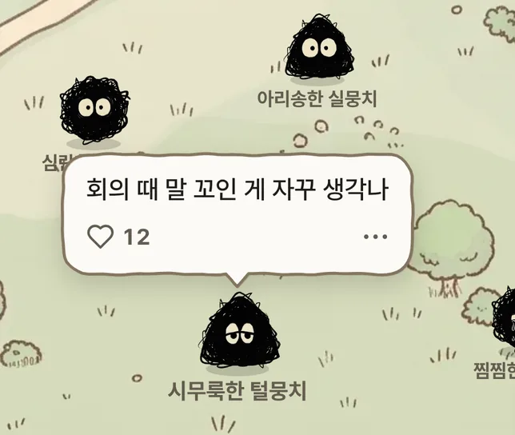

0 / 100
개인정보는 가린 채 익명으로 보일 수 있어요.
아래로 끌어서 버리기
계속 신경 쓰이는 생각들,
여기 꺼내 놓아 보세요.

별거 아닌 이유를 한 번 듣고,
적은 종이째 구겨서 버리는 곳이에요.
개인정보는 가린 채 익명으로 보일 수 있어요.
머릿속에서 자꾸 맴도는 작은 걱정을
한 발짝 떨어져서 다시 보게 해 주는 앱이에요.
털실 하나를 따라가면서 보여 드릴게요.
처음엔 있었던 일 하나뿐이에요.
있었던 일은 하나인데, 생각이 하나둘 엉겨 붙으면 실제보다 크고 무거워 보여요.
이 앱의 걱정들은 엉킨 털실을 뒤집어쓰고 있어요. 털실을 걷어 내면 안에는 작은 몸 하나뿐이에요.
무섭거나 슬픈 그림 대신 동글동글하게 그린 건, 걱정을 너무 무겁게 들고 있지 않았으면 해서예요.
적어 두면, 남의 일을 보듯 있었던 일과 엉겨 붙은 생각을 나눠 드려요.
위로보다 사실을 먼저 말해요. 별거 아니라고 정해 주는 게 아니라, 읽고 나서 스스로 그렇게 느꼈으면 해서요. 아직 걸리는 게 남았으면 한 번 더 물어볼 수 있어요.
다 봤으면 종이째 구겨서 버려요. 남는 건 있었던 일 하나, 그리고 할 일 하나예요.
다시 생각해 보면,
사실은 별거 아니었어요.
이름 같은 정보를 가린 채 익명으로 고민 나눔터에 놓여요. 둘러보다 보면, 다들 비슷한 걸로 맴돌고 있다는 걸 알게 돼요.

공감 가는 고민엔 하트를 눌러 주세요. 하트 수만큼 같은 생각을 한 사람이 있다는 뜻이에요. 누가 눌렀는지는 아무도 몰라요.
테스트 버전이에요. 적은 글은 저장하지 않아요.